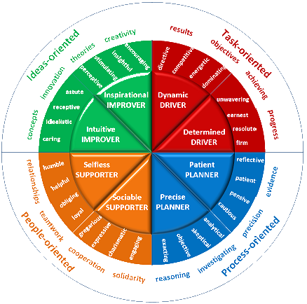
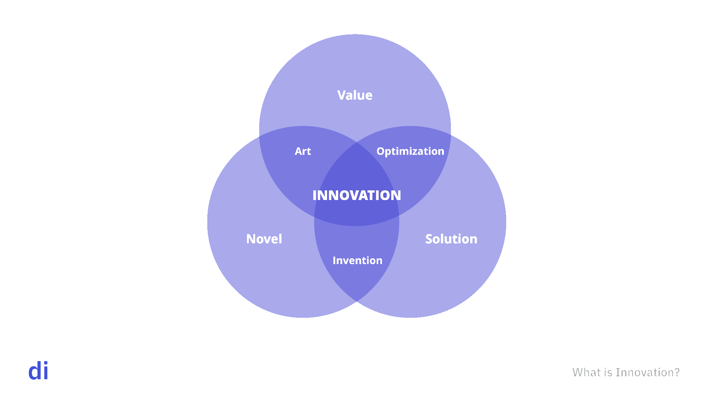
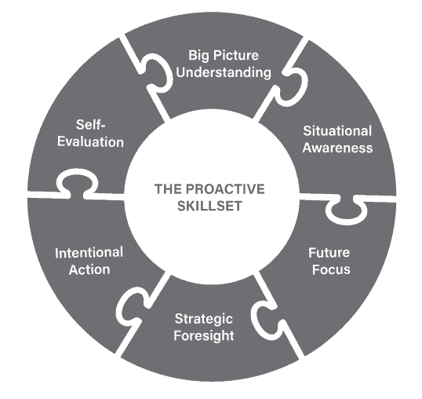
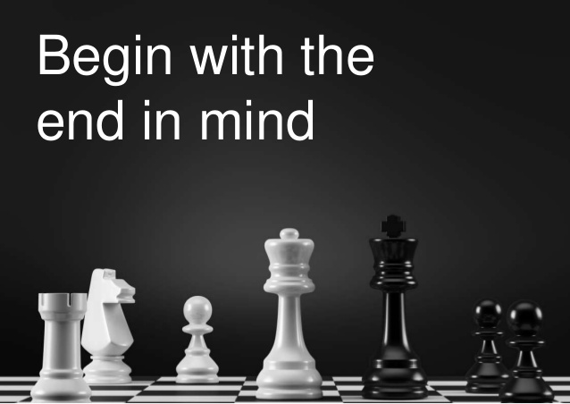
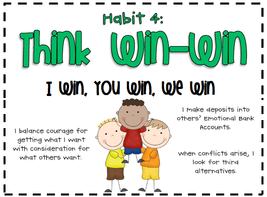
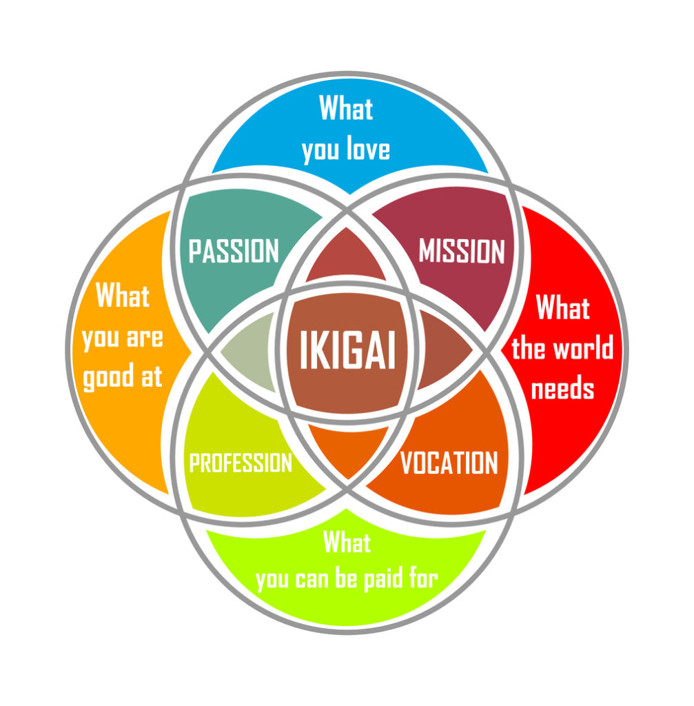

Course Name - PROFESSIONAL SKILLS AND PRACTICES
Course Code - 18PDM101L
Course Catgory - M (Mandatory)
Course Offering Department - Career Development Centre
Course Learning Rationale (CLR): The purpose of learning this course is to:
1 - Utilize success habits to improve achievement in life
2 - Develop inter personal skills and be an effective goal oriented team player to achieve success
3 - Utilize professionalism with idealistic, practical and moral values that govern the behavior
4 - Become an expert in communication and problem solving skills
5 - Re-engineer attitude required to succeed .
6 - Enhance holistic development of students and improve their employability skills
Course Learning Outcomes (CLO): At the end of this course, learners will be able to:
CLO-1 : Identify success habits
CLO-2 : Acquire inter personal skills and be an effective goal oriented team player
CLO-3 : Develop professionalism with idealistic, practical and moral values
CLO-4 : Acquire communication and problem solving skills
CLO-5 : Re-engineer their attitude and understand its influence on behavior
CLO-6 : Apply behavior changing elements to construct professionalism in character and behavior
Program Learning Outcomes (PLO) :
-Engineering Knowledge
-Problem Analysis
-Design & Development
-Analysis, Design, Research
-Modern Tool Usage
-Society & Culture
-Environment & Sustainability
-Ethics
-Individual & Team Work
-Communication
-Project Mgt. & Finance
-Life Long Learning
Personality Profiling
What is a personality profile ?
Personality profiling, also called behavioural profiling or personality testing, is a field that covers a
vast range of tools and solutions: everything from technical and clinical tools to business-oriented
solutions. Some of these use hundreds of questions to measure dozens of variables, others simply identify a
person as belonging to a certain category. However they work, though, all these approaches offer the same
underlying solution: they identify features of a personality in a way that's intended to be useful in
understanding and predicting their behaviour.
What Does a Profiler Measure?
'Personality' is a word whose meaning can be hard to pin down. In common use, for instance, most people
would consider factors like intelligence or mathematical aptitude to be part of an individual's personality,
but factors like those lie outside the role of a personality profile in the sense we mean it here.
Instead, we're concerned with modelling the ways a person tends to behave, and the underlying traits that
describe those patterns. Examples of the kinds of things we might measure would be assertiveness,
self-control, decisiveness, caution, and so on. That's a part of the reason we often prefer to talk about
'behavioural' rather than 'personality' profiling, to make the distinction clear.
The Advantages of Profiling
It's not hard to imagine the kinds of advantages this sort of profiling can bring. If we have an idea of the
kind of motivations and drives that lie under a person's approach to their work, it's possible to:
1. Understand what makes a person act in the ways that they do.
2. Motivate them to take on new and challenging tasks in their own terms.
3. Predict how they're likely to react in different situations.
4. Select the best individuals for particular tasks or roles.
5. These aren't just theoretical benefits: they can be realized in practice but a sufficiently powerful
model - and even automated in some cases. For example, see this factfile for details about how the Discus
tool can handle the selection process.
Different Types of Profiling
There are various different approaches to profiling, and different models used to describe the ways a person
works. Axiom's Discus profiler uses the DISC model to describe behaviour and personality in a way that's
specifically designed for business use. Here's how it compares with some of the other approaches:
1. It's behavioural: that is, it focuses on observing and describing behaviours rather than being based on a
specific psychological theory.
2. It's continuous: that is, it doesn't split people into a few fixed categories (but it does recognise
certain common types, as you can see here).
3. It's specific: that is, it doesn't try to model every aspect of the personality, but focuses on features
that are relevant in a business setting.

Read More
Etiquette and Grooming
Thirty seconds. That’s all it takes to make a great first impression.
According to research by Albert Mehribian, professor at the University of California, Los Angeles, upon meeting
someone for the first time we form an opinion of them within the first 30 seconds.
While some of that opinion is based on what they say, the majority (55 percent) is shaped by their appearance.
No doubt wardrobe plays an important role in appearance, but it’s often personal grooming (and hygiene) that
make the biggest impression.
In the business world, the top personal grooming issues that garner attention (and complaints) are hair
(especially body hair), dental hygiene, scent, and hands and nails. Poor grooming detracts from what you have to
say and can impede your ability to build relationships with others.
Here are tips for making sure the first impression you make is the right one.
Hair
Men:
- Keep your hair neatly trimmed and arranged. If you have severe hair loss, consider shaving your head or
cutting your hair short.
- Body hair should be trimmed so it doesn’t appear above your collar or below your sleeves. If you’re wearing an
open collar shirt, chest hair should be groomed so it doesn’t stick out.
- Facial hair (including ear and nostril hair) should be neatly trimmed.
- Eyebrows (as in “two” not “one”) should be neatly trimmed.
Women:
- Keep hair neatly styled and clean. Avoid dramatic or severe styles that can be distracting or can project an
unprofessional image.
- If you color your hair, keep up with maintenance.
- Eyebrows should be neatly trimmed and shaped.
- Be aware of any facial hair issues and take care of them as needed.
Dental Hygiene
- Always maintain fresh breath.
- Avoid foods with strong odors such as coffee and onions.
- Use mints or a breath spray after meals and before meetings.
- Avoid looking like a cow - never chew chewing gum in the workplace.
- Use whitening toothpaste or invest in a bleaching system to ensure a bright and welcoming smile.
Scent
- Always use deodorant and a strong antiperspirant.
- Keep deodorant or body wipes in your office or workspace.
- If you perspire heavily, keep an extra blouse or shirt in your office so you can freshen up as needed.
- Avoid over-scenting with cologne or perfume (especially to mask body odors). Over-scenting can be just as
offensive as unpleasant body odor.
Hands and Fingernails
- Keep nails neatly trimmed, filed, and clean at all time.
- Don’t grow fingernails to a length that’s distracting or not in synch with contemporary culture.
- Women should wear a neutral shade of nail polish and avoid using embellishments.
- If you’re “tough on your hands,” and they tend to look calloused, keep moisturizer on-hand so your hands are
not abrasive when shaking hands.
Other 9-5 Grooming Tips
- Unless you work in a tattoo parlor or belong to a “garage band,” tattoos should be covered and facial jewelry
should be removed at work.
- If you’re new on the job, ask if there are workplace policies regarding appropriate attire, facial jewelry,
tattoos and other grooming protocol.
Your appearance is important not only in making the right first impression but in building long-term relations
that rely upon mutual respect and understanding. By following these simple rules you’ll be one step closer to
building solid business relationships and (whatever our profession) having the most professional appearance
possible.
READ
MORE
Profile building: Here's why is it important for students
Profile building has assumed the guise of preparation for selective universities outside India. The classic
logic being Indian colleges following an exam-based entry process while those outside following a holistic
approach. Such branding misses the main point of the profile building process and its long-term benefits.
Profile building, pared down to its barest essentials, is a process of developing projects and skills which can
be showcased on your CV. This can then be put to different uses - may it be applying to a selective college
program, or getting your coveted job.
Once you define profile building in terms of projects and demonstrable skills, certain interesting features
emerge:
Interest focused: You really cannot do a long-term activity unless you have a deep-rooted interest in the
subject domain. This applies for jobs and higher education even more. Hence, seek out your interests in all
scenarios and not be swayed by short-term fixes.
1. Long term:
It can take many months to develop your projects. A typical profile building charter may last anywhere between
1-4 years, depending upon the goals that you seek and the level of mastery that you are aiming to develop. In
the end, projects on the CV building treadmill are a part of a never-ending spectrum, and you move from one
objective to the next.
2. Exploratory:
When you meander through a complex web of interconnected ideas, you sometimes come across an 'Aha' moment. At
that point you forge new connections and may get inspired to create something on your own. An explorer mindset
helps you uncover such journeys.
3. Experiential and project driven:
Inspiration to create would lead to new projects - may it be a research, or a maker project. Different projects
spread across your interests, would not only showcase your talents but also help you develop new skills which
may help you in your pursuits further.
4. Practical and job aligned:
Eventually, such an approach has to be out of the theoretical realms and be grounded in reality and eventual
outcomes. By that logic, most projects tend to become multidisciplinary with inputs coming in from varied
disciplines; same as life or our jobs. Seeking context in your missions and making it possible through different
projects is the only truth in such a practical approach.
In terms of the process for online learning, we recommend the following rubric:
1. Articulation of interests and focus areas. The start point should obviously be your interest. No point in
going after areas that you have no clue of or you don't like.
2. Content exploration across your core interests and adjacent topics to deepen your understanding of your
interests. In the process, you may end up developing some of those interests' further - articulating nuances
within or related areas which you were not aware of previously.
3. Progressive commitment to different projects of increasing complexity and impact. You may start off with
simple projects which may take a few hours to complete. As your interest deepens, so should your commitment. In
our experience, 100-200 hour projects lasting 3-6 months serve as an ideal benchmark for you to develop points
of showcase able references.
Clearly such project based profile or CV building has many long-term benefits. For one, it helps you acquire
relevant 21st century skills, like critical thinking, complex problem solving and creativity. Eventually, it
will help you find avenues to build mastery, and find your chosen jobs or education destinations.
You should also realise that in this knowledge driven economy, such pursuits never cease. Stay curious and be
ready to experiment; a constant endeavour to enhance your profile will keep you current and relevant all through
your professional and academic journey.
READ MORE
Innovation?
What is Innovation ?
The word “innovation” is derived from the Latin verb innovare, which means to renew. In essence, the word has
retained its meaning up until today. Innovation means to improve or to replace something, for example, a
process, a product, or a service. In the context of companies, however, the term needs a definition. In the
complex context of business, a definition is needed.
"Innovation is a process by which a domain, a product, or a service is renewed and brought up to date by
applying new processes, introducing new techniques, or establishing successful ideas to create new value."
Why is innovation so important?
1. Organizations have several options to increase their competitiveness: they can strive for price leadership or
develop a strategy of differentiation. In both cases, innovation is essential.
2. Companies that choose price leadership must secure their long-term competitiveness by developing innovative,
highly efficient processes. Process optimization and continuous improvement in terms of costs are important for
them.
3. Companies that strive for a differentiation strategy need innovation to develop unique distinguishing
features to their competitors.
4. Many start-ups launch their activities by developing an innovative product or service.
5. Continuous innovation is, therefore, crucial for all companies. The main difference is in the focus of the
innovation strategy, which varies considerably from company to company.
The Right Mindset for Innovation
Innovation requires more creativity and more willingness to take risks than the implementation of typical
projects.
1. Break the rules!
With traditional approaches and conventional methods, you will often not get anywhere in the field of
innovation. Challenge the status quo consistently! And explore new paths off the beaten track.
2. Collect ideas everywhere!
Innovation projects constantly need new ideas: To overcome obstacles, to change concepts, and to optimize
strategies.
3. Believe in the impossible!
Imagine how your innovation will look like in reality. And believe that you will be able to overcome all
obstacles on the way to realization.
4. Put together an innovation team of individuals with different perspectives and thinking styles!
Innovation needs the diversity of various competencies and diverse ways of thinking.

READ MORE
Being Proactive
Being proactive means taking responsibility for your life and actions rather than just watching how things
happen.
Being proactive takes time, since you have to consider your options, weigh alternatives and make your own
decisions in order to achieve your goals. A reactive behavior is influenced by the environment and outside
forces.
Being proactive means anticipating problems, seeking new solutions and doing your best. Being reactive, on the
contrary, means solving problems when they turn up, not wanting changes and doing the minimum effort.
How to be Proactive at Work: A Five Step System --
1. Predict
In order to be proactive, you must first develop foresight.
Proactive people are rarely caught by surprise. Learn to anticipate problems and events. Understand how things
work; look for patterns; recognize the regular routines, daily practices and natural cycles that exist in your
business. At the same time, don’t allow yourself to become complacent. Use your imagination when anticipating
future outcomes. Don’t simply expect the past to always be an accurate predictor for the future; use your
creativity and logic. Come up with multiple scenarios for how events could unfold. Proactive people are always
on their toes.
2. Prevent
Proactive people foresee potential obstacles and exert their power to find ways to overcome them before those
obstacles turn into concrete roadblocks.
They prevent problems that others would simply look back on in hindsight and claim unavoidable. Don’t allow
yourself to get swept up in a feeling of powerlessness. When challenges approach, take control and confront them
head on before they grow into overwhelming problems.
3. Plan
Proactive people plan for the future.
Avoid one-step, “here and now” thinking and instead, look ahead and anticipate long-term consequences. Bring the
future into the present; what can you do today to ensure success tomorrow? Don’t make decisions in a vacuum;
every decision is a link in a chain of events leading to one final conclusion. In order to make the best
decision, you have to know where you came from, where you are, and where you want to end up.
4. Participate
Proactive people are not idle observers, they are active participants.
In order to be proactive, you must get involved. You have to take initiative and be a part of the solution.
Recognize that you are only a piece of the whole and that you influence—and are influenced by—the actions of
others. Don’t simply react to them. Engage with them. Exert your influence and make a contribution.
5. Perform
Being proactive means taking timely, effective action.
You must be decisive and willing to do the work NOW. Procrastination is not an option. Take ownership of your
performance and hold yourself accountable. Stand behind your decisions. Being proactive means you have taken
careful, thoughtful steps to choose the appropriate path; you’re not just reacting impulsively to your
environment.

READ MORE
Begin with end in mind
How would you like to be in a few years? You’ve probably read or heard this question in countless places, but
you’ve never taken it seriously, because you believe that thinking about “it” isn’t going to lead you to “it”.
Or because you don’t want to face the harsh reality: Are you who you’ve always wanted to be? Are you doing what
you’ve always dreamed to do?
A lot of people spend their lives being very busy at things that aren’t really that important, achieving success
at the expense of things that are much more valuable to them. If we don’t have the right vision, every step we
take will lead us to the wrong place quicklier.
1) Purpose: What do you want to do with your life?
2) Vision: How do you want to be in the next 3-5 years?
3) Goals: What do you want to achieve, personally and professionally, in the next 1-2 years?
4) Areas of Focus: What areas of your life deserve your attention?
5) Projects: What commitments are you making to achieve your goals?
6) Actions: What steps are you taking to meet the higher levels?
Reflecting on where you would like to be in a few years, at all levels (career, family, personal
accomplishments, etc.), can change the way you see your life. Clearly defining your vision helps you make
decisions, identify solutions and address critical issues.

READ MORE
Collaborative Skills
What Are Collaborative Skills?
Anyone who has coworkers has probably had to work with someone else to complete a project, whether it's
completing an important report or assembling a retail display. Such collaboration requires the use of
collaborative skills. Collaborative skills are the behaviors that help two or more people work together and
function well in the process. Teachers can train their students in the skills of collaboration so they will be
able to accomplish group tasks, not just in the classroom but also in work settings, social settings and other
aspects of life.
How Collaboration Skills Work
The idea of collaboration seems easy enough, but in reality, it can be challenging to collaborate with others.
Each person on a team has strengths and weaknesses, communication preferences, and personal goals. Company
culture also influences collaboration. Some companies value collaboration and provide training on how to
collaborate, while others assume that collaboration will naturally happen.1
Using collaboration skills within a team may include:
1) Keeping communication open and never withholding information necessary to carry out tasks
2) Reaching a consensus about goals and methods for completing projects or tasks
3) Offering recognition of the contributions of others on your team, giving credit where credit is due
4) Identifying obstacles and addressing problems cooperatively as they occur
5) Placing group goals above personal satisfaction and/or recognition, especially if you're the leader
6) Apologizing for missteps and forgiving others for mistakes; holding a grudge or sabotaging the efforts of
other team members destroys collaboration
READ
MORE
Think Win-Win
The idea behind “think win-win” is to have the courage to seek mutual benefit from all human interactions
instead of having winners on the one side and losers on the other.
Achieving a “Win-Win” way of interacting with others is more than just being nice or looking for a quick fix. In
fact, a Win-Win solution isn’t easy.
When it is not possible to reach a Win-Win solution, then you should suggest a “No Deal.”
Why is the Fourth Habit so Important?
1. It helps build long-lasting trust that will make all interactions a lot easier.
2. It will bring more “luck” in your life, too.
3. In Covey’s terms, the Fourth Habit helps make deposits in the emotional bank account of the person you are
dealing with.
4. Working with a mentality of abundance can change how you see work and life in general.
5. Rather than feeling envious for someone else’s success, you will be genuinely be energized by it.
Balancing Courage and Consideration
Covey notes our natural tendency to think in dichotomies, in either/or terms. We tend to think that if we’re
nice, we’re not tough.
“But Win/Win is nice…and tough. It’s twice as tough as Win/Lose, to go for Win/Win, you not only have to be
nice, you have to be courageous. You not only have to be empathic, you have to be confident”.
- Being high on courage and low on consideration is thinking Win/Lose. It’s having the courage of our
convictions, but not being considerate about others’ convictions.
- Being high on consideration and low on courage is thinking Lose/Win. It’s being so considerate of someone
else’s convictions and desires that we won’t have the courage to express and realise our own.
It takes conscious practice so start today :)

READ MORE
Ikigai
What is Ikigai?
Ikigai (pronounced “eye-ka-guy”) is, above all else, a lifestyle that strives to balance the spiritual with the
practical.
This balance is found at the intersection where your passions and talents converge with the things that the
world needs and is willing to pay for.
For as long as I can remember, I’ve felt a certain existential frustration that stemmed from the conflicting
desires. One one hand, I wanted to live a life of meaning and consequence. On the other, I wanted to enjoy the
lifestyle that came along with money.
The result was an infuriating struggle between the things that made money and the things I truly cared
about.
I set out to solve this with a concept I called “Enlightened Entrepreneurship,” which tried to find the right
balance between these seemingly conflicting goals.
However, I always felt it was missing a certain something that I could never put my finger on.
I now believe that Ikigai is the refined version of the concept I was looking for. It is, simply put, your
reason for getting out of bed every morning.
Discovering your Ikigai
One of the many mistakes I’ve made in my life was believing that money led to fulfillment. That’s largely why I
went into finance in the first place.
When I think back on those days, I can’t help but think of the James Taylor lyric “you can play the game and you
can act out the part,even though you know it wasn't written for you.”
It never felt right, but I thought that if I had money, then I could have an impact on the world.
What I learned, however, is that form follows intent.
To discover you Ikigai, you must first find what you’re most passionate about. Then, you find the medium through
which you can express that passion.
Steve Jobs is a fantastic example of this idea. It’s easy to think of Jobs as a titan of technology, but that
would be inaccurate. Jobs was a lover of fine craftsmanship, first and foremost.
Whether it was a matter of collecting handmade Japanese tea cups or obsessing over design details of various
products, he wrapped himself in his passion for finely made items.
Apple and Pixar were merely his chosen mediums of expression.
This is something that I can relate to. I’d be lying if I said that I always cared deeply about finance,
technology, or franchising. Truth be told, those things are not particularly meaningful to me in and of
themselves.
What I am passionate about is transparency, truth, and helping people live up to their highest potential.
My company is simply the vehicle through which I can take these passions, apply them to the things that the
world needs, and make a profit in the process.
In other words, BodeTree is my Ikigai.
Why is ikigai important?
Many sociologists, scientists, and journalists have researched and hypothesized the usefulness and truth behind
this particular phenomenon, and they’ve come to a number of very interesting conclusions. One particular theory
is that ikigai can make you live longer and with more direction.
In September 2017, the popular Japanese TV program Takeshi no katei no igaku partnered with a group of
scientists to conduct research in the small town of Kyotango in Kyoto, a place which prides itself in having a
population that has three times more residents over the age of 100 compared to the average of the rest of the
country.
The program wanted to know what commonalities these elderly happy people had in their daily lives and so
followed seven people in their late 90s and early 100s around from morning ‘till dawn, doing blood tests and
other health check-ups.
What they found interesting was that all seven people had exceptionally high figures of DHEA, a steroid hormone
secreted by the adrenal glands that many believe may be the miracle “longevity hormone.”
Interestingly enough, as the program followed those men and women around, they found one single thing they all
had in common: a hobby they practiced every day that they were really into. One woman in her late 90s was seen
spending a few hours everyday carving Japanese traditional masks, another man painted, another went fishing
daily.
While the correlation between having a hobby you love and the increase of DHEA is yet to be proven
scientifically, the program suggested that having this one thing that keeps you interested, focused, and gives
you a sense of satisfaction in life may boost your youth DHEA hormone, thus leading to a longer and happier
life.

READ MORE
Self-worth
What is Self-Worth?
Self-worth is an internal state of being that comes from self-understanding, self-love, and self-acceptance.
It’s a state that is somewhat timeless and unchanging because it’s a direct measure of how you value and regard
yourself in spite of what others may say or do. It’s, therefore, something that doesn’t quickly or easily change
when external factors or circumstances change.
Self-worth is steady and unflinching, and therefore, holds power to radically transform your life for the
better.
This is, of course, all well and good, but what does it actually mean to have a high level of self-worth?
To have a high level of self-worth means having a favorable opinion or estimate of yourself. It means having
unshakable faith in yourself and in your ability to follow through and get things done.
Having a high degree of self-worth means feeling worthy of good things. It means feeling deserving of happiness,
health, wealth, success, and love — irrespective of the difficulties you face, the disappointments you
experience, or of people’s opinions. In a word, it’s unflinching.
To have a high level of self-worth means accepting yourself wholeheartedly at all times despite your flaws,
weaknesses, and limitations. It’s about recognizing the real value of who you are — right here, right now, at
this present moment.
To have a high level of self-worth means never allowing yourself to be defined by outside forces, including
people’s opinions. It means never allowing outcomes to shake your confidence, faith or resolve.
All this essentially means that no matter what happens you are steadfast. Nothing outside of your “being”
influences how you feel about yourself. Your influence alone is the only thing that matters.
You alone are the most significant factor in how you feel about yourself, about your life, and about your
circumstances. And that is essentially where your personal power comes from.
How to Build Your Self-Worth
So, all this is wonderful, right? Having a high level of self-worth is no doubt of tremendous value. But the
question still remains, how do we go about building our self-worth? How do we create enough self-worth to
empower our daily decisions and actions in a way that will help us achieve our desired outcomes?
What I would like to share with you is a five-step process for doing exactly that — for building your
self-worth, step-by-step.
This, of course, isn’t something that you can do just once and then forget about. It’s rather something that you
must consistently work on. That’s the only way you will build anything of real value.
Placing one single stone down on the ground doesn’t build a fortress. However, over time, as you lay down more
stones a fortress begins to take shape. But, this takes time. And building a high level of self-worth will also
take time. You must, therefore, see this as a long-term process that you need to work on consistently over
time.
Lay down a new stone each day. Eventually, the fortress will grow more prominent and more substantial until it
becomes almost unbreakable.
A strong wind might blow, hail and rain might bucket down, and thunder might shake the ground. And yet, despite
all this, your fortress will remain intact.
It stands its ground because you put in place a solid foundation that you consistently built over time. And
that’s where the strength of the fortress comes from. And that’s precisely where the power of your self-worth
comes from as well.
With that in mind, let’s now jump into the five-step process to help you build your self-worth.
Self-Worth versus Self-Esteem
There is not a huge difference between self-worth and self-esteem, especially for those who are not
professionals in the field of psychology. In fact, the first definition of self-worth on the Merriam-Webster
dictionary website is simply “self-esteem.”
Similarly, the World Book Dictionary definition of self-esteem is “thinking well of oneself; self-respect,”
while self-worth is defined as “a favorable estimate or opinion of oneself; self-esteem” (Bogee, Jr., 1998).
Clearly, many of these terms are used to talk about the same ideas, but for those deeply immersed in these
concepts, there is a slight difference. Dr. Christina Hibbert explains this:
“Self-esteem is what we think and feel and believe about ourselves. Self-worth is recognizing ‘I am greater than
all of those things.’ It is a deep knowing that I am of value, that I am loveable, necessary to this life, and
of incomprehensible worth.” (2013).
READ MORE